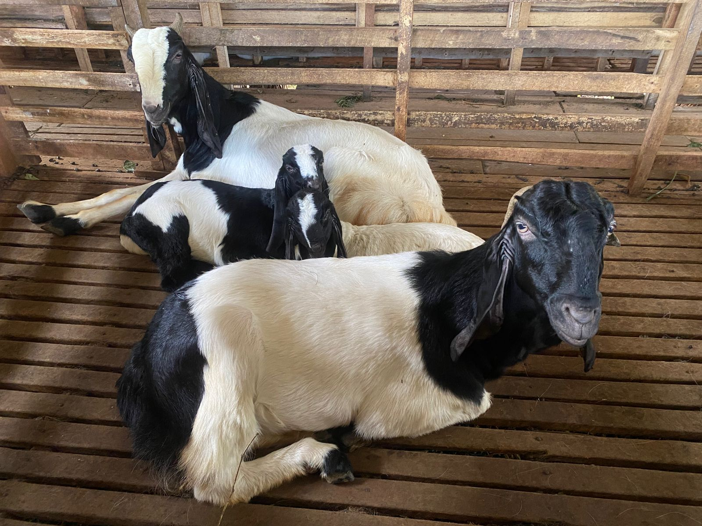
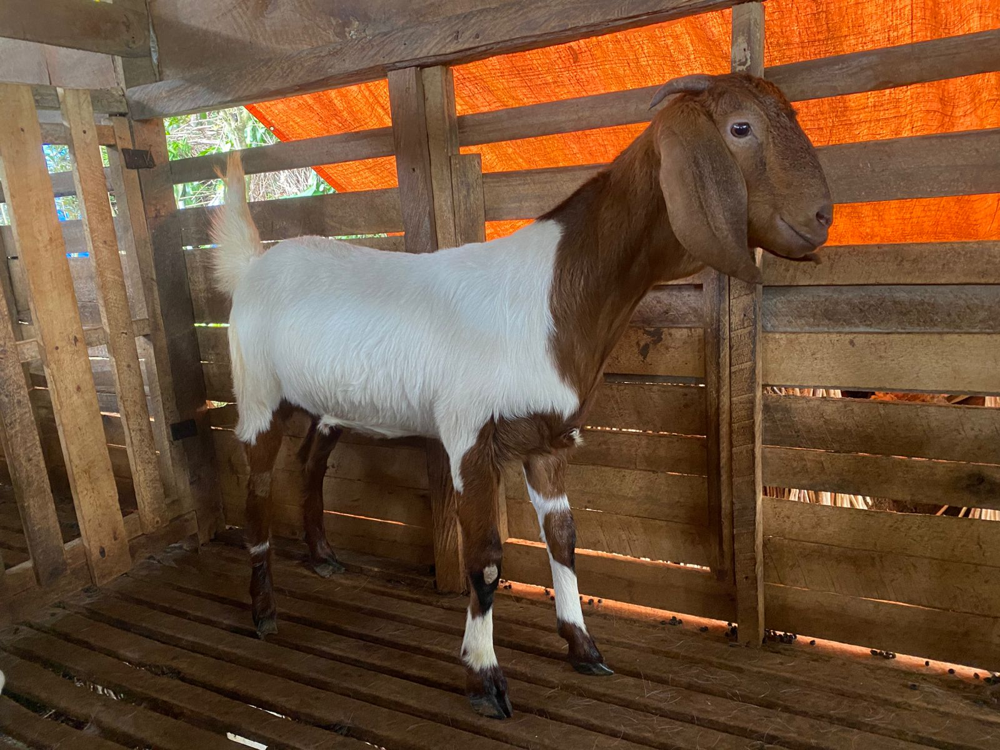
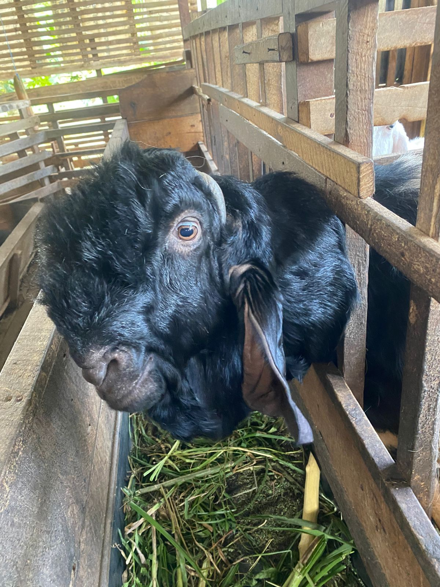
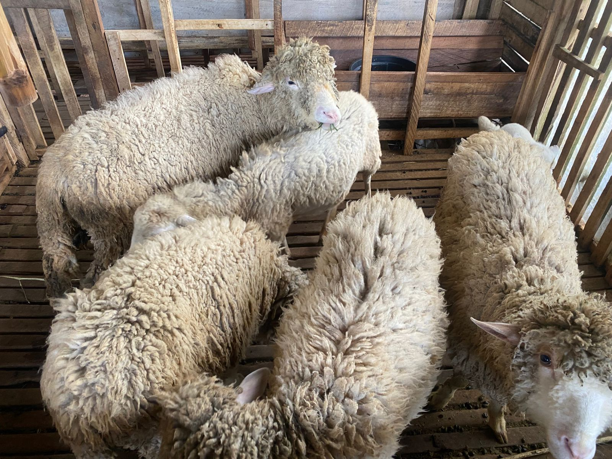

Produk Hewan Ternak Kami
Pilihan Hewan Ternak Terbaik dari BERKAH FARM

Kambing Jawa Biasa
Kambing lokal Indonesia yang dikenal dengan daya tahan tubuh yang kuat dan adaptasi yang baik terhadap iklim tropis. Ideal untuk program penggemukan atau bibit ternak yang tangguh.
- Adaptif
- Mudah dipelihara
- Daging berkualitas

Kambing Boer
Ras kambing pedaging unggulan dari Afrika Selatan, terkenal dengan pertumbuhan cepat, bobot badan besar, dan kualitas karkas yang tinggi. Sangat cocok untuk usaha penggemukan.
- Pertumbuhan cepat
- Kualitas daging premium
- Produktivitas tinggi

Kambing Etawa Kaligesing
Kambing dwi-fungsi (penghasil susu dan daging) yang populer di Indonesia, terutama jenis Kaligesing yang memiliki postur besar dan telinga panjang. Juga sering dijadikan kambing kontes.
- Penghasil susu
- Daging berkualitas
- Postur menarik

Domba Merino
Domba asli Spanyol yang sangat terkenal akan produksi wolnya yang halus dan berkualitas tinggi. Selain wol, Domba Merino juga memiliki kualitas daging yang baik dan produktif untuk dikembangkan.
- Wol premium
- Daging empuk
- Produktif